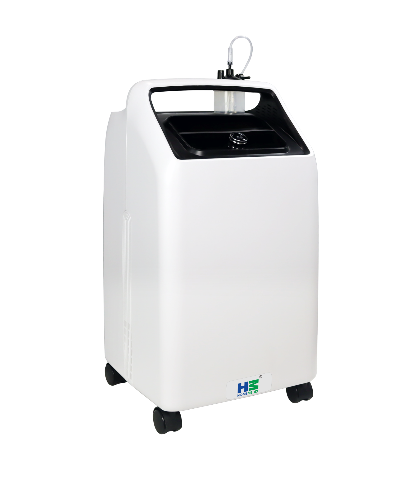

Respiratory Care
Oxygen Concentrator KV
Compact portable variant of the KX — lighter and ideal for mobility.
Hospital-grade oxygen at home. The KX delivers a continuous, concentrated stream of 93%+ pure oxygen — quietly, efficiently, and affordably — for patients who depend on it.

An oxygen concentrator is a medical device that extracts oxygen from room air and delivers a concentrated, high-purity stream to the patient. It produces oxygen continuously as long as it's plugged in — no refills, no supply disruptions, no storage concerns.
It is prescribed for patients with COPD, pneumonia, heart failure, post-COVID lung damage, asthma, and pulmonary fibrosis who require supplemental oxygen therapy at home or in a clinical setting.
PSA (Pressure Swing Adsorption) technology — the same method used in hospital oxygen plants, now in a compact home-use device.
Room air (21% O₂, 78% N₂) is drawn in through intake filters that remove dust and particulates.
Air passes through zeolite molecular sieve beds that adsorb (trap) nitrogen, leaving concentrated oxygen behind.
Concentrated oxygen (93%+) is stored in a product tank, maintaining stable pressure and flow rate.
Oxygen is delivered via nasal cannula or mask at 0.5–10 LPM, adjusted by the built-in flow meter to match the patient's prescribed rate.
We make it — not just stock it. That means faster service, genuine spares, and no grey-market concerns.
Designed to handle Indian power supply fluctuations (150–300V tolerance), heat, and humidity — where imported machines often fail.
The KX is rated for continuous use — no mandatory cool-down periods. Ideal for patients requiring uninterrupted oxygen therapy.
Dual ISO certification ensures every unit meets international quality management and medical device standards.
Expert installation, sieve-bed maintenance guidance, and rapid spare part availability — because oxygen therapy cannot afford downtime.
Lower purchase price than imported brands. With no cylinder costs, most patients recover the investment within months.
| Parameter | Specification |
|---|---|
| Oxygen Concentration | 93% ± 3% |
| Flow Rate | 0.5–10 LPM (adjustable) |
| Oxygen Delivery Pressure | 0.04–0.06 MPa |
| Noise Level | ≤48 dB(A) |
| Power Consumption | 550 VA |
| Working Voltage | AC 230V / 50 Hz |
| Weight | 25.6 kg |
| Continuous Use | 24 hours / day, 7 days / week |
| Alarms | Low oxygen concentration, power failure, high temperature |
| Filter | Replaceable air intake filter |
| Warranty | 3 years or 10,000 hours of operation, whichever comes first |
| Certification | ISO 9001:2016 | ISO 13485:2016 | CDSCO Licensed |
COPD, asthma, post-COVID, heart failure patients prescribed long-term oxygen therapy at home. Replaces costly cylinders permanently.
Backup oxygen supply for wards, emergency rooms, and procedural areas. Cost-effective alternative to piped oxygen for smaller facilities.
Patients discharged after pneumonia, COVID, or surgery requiring supplemental oxygen at home during recovery.
Compact portable variant of the KX — lighter and ideal for mobility.
Used alongside oxygen therapy for nebulised medication delivery.
For patients with sleep apnea requiring airway pressure therapy.
The KX supports an adjustable flow rate of 0.5–10 LPM with a built-in flow meter. It delivers 93% ± 3% oxygen purity across the full flow range. Power consumption is 550 VA. The appropriate flow rate is set based on the patient's prescription — your physician will specify the LPM required for your condition.
Both models deliver identical oxygen purity (93% ± 3%). The KX is the standard home model with slightly higher build robustness, weighing approximately 14 kg, and is ideal for permanent placement. The KV is the compact, lighter variant with a carry handle and wheels, designed for portability. If you have the space, the KX is preferred; if mobility matters, choose the KV.
The 5L KX model consumes ≤280W and the 10L model consumes ≤550W. It runs on 220–240V AC, 50 Hz and is designed with wide voltage tolerance (150–300V) to handle Indian power supply fluctuations. For patients dependent on continuous oxygen, we recommend a UPS/inverter with at least 2 hours backup as a precaution during power outages.
The KX has a replaceable air intake filter that should be cleaned monthly — a quick 2-minute task. The filter itself typically needs replacement every 6–12 months depending on ambient dust levels. Genuine Home Medix replacement filters are available directly from us. The KX carries a 3-year or 10,000-hour warranty (whichever comes first).
The KX is designed for single-patient use at its rated flow. Using a splitter to serve two patients will halve the effective flow rate per patient and may reduce oxygen purity below therapeutic levels. If two patients require oxygen therapy simultaneously, we recommend using two separate concentrator units to ensure each patient receives the prescribed flow and purity. Contact us for multi-unit pricing.
Available for homes, hospitals, and clinics. Bulk pricing for healthcare facilities. Delivery across India.